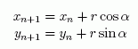

SpiroJ is a simple generator of hypotrochoids and similar roulettes. The basic principle is rolling one circle on another circle. If you are interested in mathematical details, see www.wikipedia.org. SpiroJ tool is similar to the classic Spirograph toy, but it is more flexible. In addition, user can export generated roulettes to vector graphics, which can be imported to many graphic editors.
SpiroJ by clicking application JAR or using one of prepared batch files. You need JavaTM Runtime Environment [2] Version 1.4.x. or later to run the application (Version JRE 1.4.2 is recommended). Select [File – New Design] menu command. A default roulette should appear. Now you can try to change ratio value to 8 and press [Calc] button, for example. Or try to decrease Rolling radius and calculate the roulette
again. You can play with basic parameters and observe, how the shape
changes.
Fig. 1: New SpiroJ design
example directory. If you want to understand details, please read mathematic description.
Current version of SpiroJ can export to three vector formats:
SpiroJ application, the roulette is generated using cascade of two rotating operators (see Fig. 2). In basic mode (1), only radius r of each rotation and frequency relation between them can be adjusted. In advanced mode (2), radius and frequency for x and y axis can be adjusted separately for each rotation.
Fig. 2: Double rotation
 (1)
(2)
SpiroJ user interface allows to edit only two rotating operators, but if you are familiar with XML, you can add more rotating operators to the chain by editing the XML and loading it into the application. In this case, you should understand what you are doing, of course.
You can emulate some classical curves. For example: switch to advanced mode and set X radius to 60, Y radius to 0 and both frequencies to 1 for fixed cycle, set X radius to 0, Y radius to 30 and both frequencies to 3 for rolling cycle, number of steps to 100, and you get a typical Lissajouse curve (examples/lissajouse.xml), see figure 3.
Fig. 3: Screen-shot: lissajouse.xml
In the advanced mode, you can create very strange shapes. In the figure 4 you can see screen-shot of the SpiroJ and in the next figure is the same shape imported into Xara and slightly improved.
Fig. 4: Screen-shot: decor5.xml
Fig. 5: Export from Xara: decor5.gif
Fig. 6: Other examples
Author of SpiroJ, František Grebeníèek is a software developer. His favourite programming language is Java. If you like this application, do not hesitate to send him a complimentary email :-)